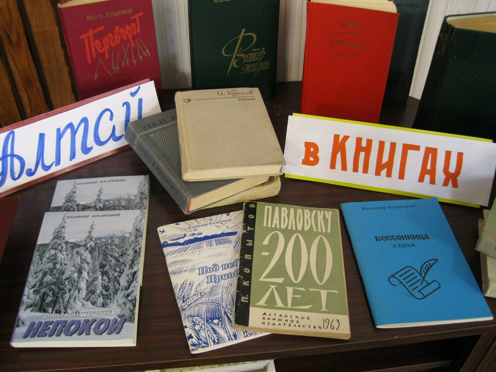
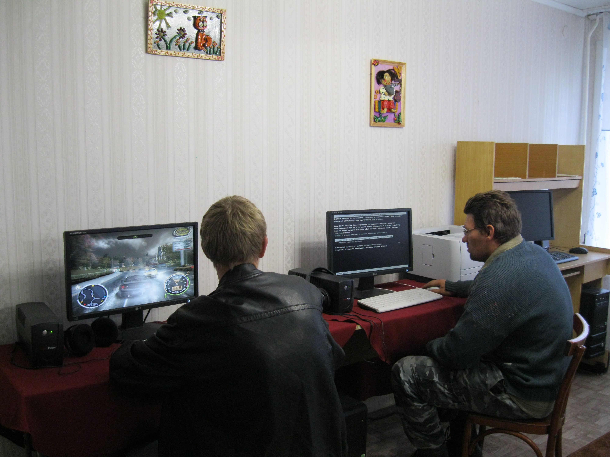
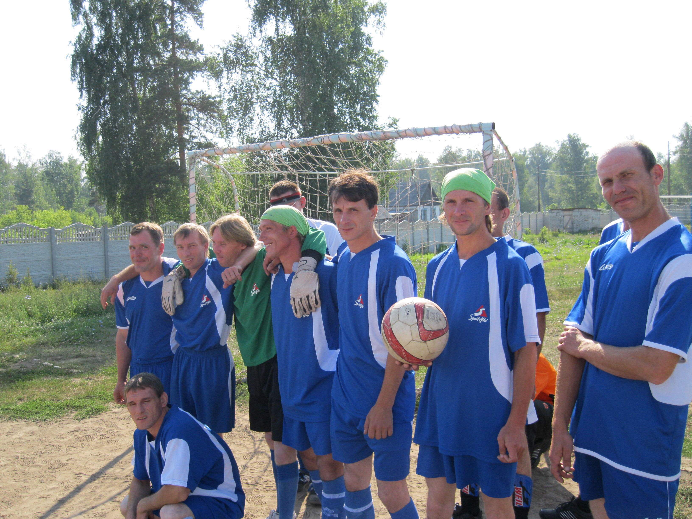

Каждому - занятия по интересам
В интернате ведется социально – трудовая реабилитация: работа на приусадебном участке, посадка, прополка цветов, сбор семян, работа по благоустройству территории. Трудовая деятельность организуется с целью улучшения состояния здоровья инвалидов, рационального использования свободного времени на добровольной основе, учитывая индивидуальные личностные особенности и рекомендации врача.
За процесс трудотерапии несут ответственность инструктора по труду.
В интернате трудотерапией заняты 103 человека. Ежегодно, на празднике «Золотой осени» никто из них не остаётся без подарка.
Социально – трудовая реабилитация осуществляется и через декоративно – прикладное творчество: рисование, декорирование, папье – маше, лепка из глины и соленого теста, вышивка бисером, вязанье крючком и на спицах, работа с бросовым и природным материалом. Работает кружок «Мурзилка».
Принимали участие в выставках прикладного творчества ветеранов Павловского района «Чудесные творения умелых рук», краевом социальном выставочном проекте «Мы равны», в творческом фестивале «Свет нашей души» в номинации декоративно-прикладное творчество, в выставке 4-го краевого фестиваля среди лиц с ограниченными возможностями «Радуга творчества» и др.
Уделяется большое внимание культурно-массовой программе. В течение года проводятся дискотеки с элементами игр и развлечений. Совместно с сотрудниками и проживающими встречают Новый год, поют, танцуют возле елки, читают стихи.
В день Защитника Отечества и Международный женский день показывают концертные номера, в день Святого Валентина проживающие изготавливают и дарят друг другу открытки и сердечки.
К празднованию 70-летия Победы был проведен ряд мероприятий по нравственно патриотическому воспитанию, подготовлен праздничный концерт.
Неоднократно на нашей сцене были и профессиональные артисты цирка, творческие концерты представлял хор ветеранов, Павловская школа искусств, Павловская коррекционная школа.
Наши проживающие в свою очередь побывали на «Ледовом шоу» во Дворце спорта, в театре Драмы и муз. комедии краевого центра.

Лекарство для души
Библиотека действует с начала основания интерната. Главным в своей работе библиотекарь считает дифференцированный подход к обслуживанию проживающих. Знаменитый принцип «Каждому читателю – нужную книгу в нужный момент» важен в работе с нашими проживающими. Он предполагает знание книги, информационного материала, знание читателя, его эмоциональное состояние.
Библиотерапия – лечение чтением особенно актуальна для жильцов отделения милосердия, где человек сам не умеет читать и сосредоточиться. Чтение может вызвать самые разные эмоции: печаль, радость, счастье. С использованием элементов театрализации это становится более доступным для всех.
Литературные произведения оказывают большое влияние на духовный мир человека и его физическое состояние.
Книжно-иллюстрированные выставки, готовящиеся к праздникам и знаменательным датам, раскрывают фонд и вызывают интерес к изданиям.
В библиотеке проводятся литературные викторины, информационные часы, часы общения.
В 2013 при библиотеке был открыт компьютерный класс. Обучение инвалидов основам компьютерной грамотности непростой процесс, ведь уровень развития у всех разный и к каждому нужен свой подход.
Жильцы, у которых интеллектуальный уровень недостаточен для освоения высокого уровня компьютерной грамотности, с помощью библиотекаря могут поиграть в развивающие игры, постичь окружающий мир. Ну а некоторые пользователи компьютерного класса умеют самостоятельно работать в интернете, имеют странички в социальных сетях.
Общение с компьютером в основном несет досуговую функцию, но тем не менее компьютерные игры разного уровня развивают усидчивость, логику, внимание, а пользование компьютерной мышкой – мелкую моторику.

О спорт - ты жизнь
Одно из условий, благоприятное для физической, психологической и социальной реабилитации инвалидов является спортивная деятельность.
Учитывается желание проживающего, индивидуальные особенности, заключение врача.
В интернате в любое время все желающие могут заниматься настольным теннисом, дарцем, шашками, шахматами.
В рамках интерната к празднику Победы который год подряд проходят шашечные турниры. Тубочаков Виталий – лучший в этом виде спорта.
Спортсмены интерната постоянные участники летних спартакиад среди краевых государственных бюджетных стационарных учреждений социального обслуживания, спортивных праздников «Веселые старты».
Вдовин Сергей занимается гиревым спортом. В 2015 году на летней спартакиаде в с. Павловск он завоевал 1 место, а в 2017 году наша команда заняла 3 место в спартакиаде проходящей в КГБСУСО «Пещерский психоневрологический интернат»
Микрозона, где проводят большую часть времени проживающие оборудована беседками, есть волейбольная площадка и баскетбольное кольцо.
В зимнее время в актовом зале проводятся праздники с играми, соревнованиями, подарками.

Организация медико-социальной службы
КГБСУСО "Павловский психоневрологический интернат" создан на базе Комитета администрации Алтайского края по социальной защите населения в 1980 году, располагается в с.Павловск, Павловского района, на кромке соснового бора, в ста метрах от Павловской ЦРБ. Через с.Павловск проходит федеральная автомобильная трасса Барнаул – Камень-на-Оби.
Организация медико-социальной службы в КГБСУСО "Павловский психоневрологический интернат"
В задачи службы входит :
Материально-бытовое обеспечение инвалидов, создание благоприятных условий проживания, организация ухода за проживающими, предупреждение возможного обострения.
- Осуществление социально-бытовой реабилитации, комплексного режима содержания.
- Санитарно-гигиеническое обслуживание проживающих.
Павловский психоневрологический интернат создан на базе Комитета администрации Алтайского края по социальной защите населения в 1980 году .
Управление интерната осуществляется в соответствии с законодательством Российской Федерации и Уставом учреждения .
Медицинской частью интерната руководит зам. директора по медицинской части, врач, в соответствии с "Положением о медицинском отделении":
Работа медицинской части интерната регламентирована в соответствии с Уставом КГБСУСО «Павловский психоневрологический интернат» и «Положением о медицинском отделении КГБСУСО "Павловский психоневрологический интернат"», Нормативно-правовыми документами в области стационарного обслуживания населения Министерства труда и социальной защиты Алтайского края.
Медицинское обслуживание в интернате осуществляется с учётом клинического состояния , психологических особенностей, компенсаторно-адаптационных возможностей больных и социально-трудового прогноза . На основе перечисленных критериев проводится группировка контингента инвалидов и организуется дифференцированное обслуживание в отделениях соответствующего профиля:
- Отделение интенсивного ухода - отделение Милосердия - в нем находятся больные с тяжелыми соматическими и неврологическими расстройствами , с глубокой степенью слабоумия , дезориентированные в месте, времени , окружающей обстановке , не способные к самообслуживанию, обучению простейшим трудовым навыкам , к общению с окружающими , нуждающиеся в полном медицинском и бытовом уходе . Часть больных этого отделения , не способных к самостоятельному передвижению , с параличами и с резко выраженной соматической слабостью , находятся на постельном режиме содержания ; другая часть - на наблюдательном режиме содержания ;
- Отделение медико-педагогической коррекции - в этом отделении проживают больные , у которых интеллектуальный дефект сочетается с выраженными расстройствами эмоционально- волевой сферы , дезорганизацией целенаправленной деятельности и поведения . Они способны овладеть санитарно-гигиеническими навыками, частичным самообслуживанием , простейшими трудовыми навыками , но только при постоянной стимуляции со стороны персонала и коррекции их поведения и целенаправленной деятельности;
- Отделение социо-реабилитационного профиля - в него направляются наиболее сохранные больные , интеллектуальный дефект которых не препятствует обучению несложным профессиям и систематическому занятию трудом , без выраженных эмоционально-волевых нарушений , способные к полному бытовому самообслуживанию , владеющие санитарно-гигиеническими навыками .
Часть проживающих в отделении медико-педагогической коррекции без грубых расстройств поведения и влечений , а также все проживающие в отделении социо-реабилитационного профиля могут находиться на свободном режиме содержания .
Свободный режим содержания предусматривает дифференцированный подход к определению степени самостоятельности проживающего . Первой ступенью является свободное нахождение и перемещение проживающего по территории интерната ; второй - коллективный выход за пределы интерната в сопровождении персонала ; третьей - разовый пропуск для выхода из интерната ; четвертой - постоянный выход из дома-интерната . В любом случае определение режима содержания и его традиций является функцией врача . При обострениях заболевания , ухудшении соматического состояния проживающий должен быть переведен по заключению врача с одного режима содержания на другой . В равной степени это относится и к случаям улучшения состояния .
Учитывая , что в психоневрологические интернаты поступают больные на поздних стадиях течения заболевания с расстройствами психических функций преимущественно в форме деменции , выраженными эмоционально-волевыми нарушениями целенаправленной деятельности и активности, а также лица с глубокими степенями умственной отсталости, организация медицинского обслуживания проживающих в интернате направлена на обеспечение единства медицинских , трудотерапевтических и социальных воздействий , на выявление сопутствующих заболеваний на ранних стадиях , своевременное предупреждение обострений основного процесса и сопутствующих соматических заболеваний , обеспечение динамического наблюдения за состоянием здоровья проживающих . За всеми проживающими в интернате осуществляется динамическое наблюдение врачом интерната в виде профилактических осмотров , которые проводятся один раз в квартал . При наличии медицинских показаний к этим осмотрам привлекаются врачи узких специальностей.
Лица , получающие специфическое(противосудорожное, нейролептическое и др.) , патогенетическое(рассасывающее , дегидратационное и др.) лечение , а также другие виды активного лечения постоянно находятся под наблюдением врача интерната. Больные в состоянии обострения психического заболевания , а также нуждающиеся в терапевтической , хирургической, гинекологической и другой помощи , которую невозможно обеспечить в условиях интерната , инфекционные больные , направляются в лечебные учреждения органов здравоохранения. Больные , направляемые в лечебные учреждения сопровождаются медицинским персоналом .
Вся организация лечебно-профилактической помощи направлена на выявление сопутствующей патологии, своевременное предупреждение обострений основного процесса. Благодаря применению современных препаратов сроки лечения соматических заболеваний значительно сократились, а применение атипичных психотропных препаратов нового поколения в лечении ослабленных и пожилых больных позволили свести к минимуму нежелательные эффекты, связанные с их назначением. Важное место в общей системе лечебно-профилактических мероприятий отведено медикаментозному лечению, которое разделяется на курсовое, поддерживающее, купирующее и активирующее, в соответствии с приказом МЗ РФ №311 "Об утверждении клинического руководства "Модели диагностики и лечения психических и поведенческих расстройств". При назначении лечения руководствуемся общими принципами, которые положены в основу медикаментозного воздействия на больных с отдаленными последствиями психических заболеваний. Благодаря наличию в штате узких специалистов увеличилась выявляемость заболеваний на ранних этапах при активных осмотрах, постоянно ведется диспансеризация, значительно возросла обращаемость проживающих по поводу соматических заболеваний, увеличилось количество госпитализаций в соматические отделения ЦРБ и в специализированные отделения краевых учреждений. У пожилых больных очень большая доля заболеваний приходится на органы сердечно-сосудистой системы и легких: гипертоническая болезнь, хроническая сердечно-сосудистая недостаточность, склеротические изменения сосудов, ХОБЛ, хронический бронхит. Введение в лекарственную терапию пролонгированных комбинированных препаратов последних поколений, позволяет добиться положительной длительной динамики на всех стадиях течения болезни без выраженных побочных эффектов.
В интернате установлен распорядок дня , в котором определено время подъема , проведение санитарно-гигиенических мероприятий , лечебных процедур , приема пищи , выполнения хозяйственных работ , прогулок и культурных мероприятий . Выполнение правил проживания обязательно для всех проживающих в интернате инвалидов. Работа медицинского персонала регламентирована в соответствии с "Положением о медицинском отделении КГБСУСО "Павловский психоневрологический интернат"", должностными инструкциями.
Порядок предоставления социальных услуг
Приказ от 28 ноября 2014г. N 400 О порядках предоставления социальных услуг поставщиками социальных услуг в Алтайском крае
Приказ от 30 апреля 2020г. О внесении изменений в приказ Главного управления Алтайского края по социальной защите населения и преодолению последствий ядерных испытаний на Семипалатинском полигоне от 28.11.2014 N 400
Правила внутреннего распорядка
Организация лечебно профилактической работы
Павловский психоневрологический интернат имеет лицензию ЛО-22-01-005440 от 23 августа 2019 г. бессрочно на осуществление медицинской деятельности.
При оказании первичной, в том числе доврачебной, врачебной и специализированной, медико-санитарной помощи организуются и выполняются следующие работы (услуги):
- При оказании первичной доврачебной медико-санитарной помощи в амбулаторных условиях по: лабораторной диагностике, медицинскому массажу, организации сестринского дела, сестринскому делу, стоматологии, физиотерапии.
- При оказании первичной врачебной медико-санитарной помощи в амбулаторных условиях по: терапии, организации здравоохранения и общественному здоровью.
- При оказании первичной специализированной медико-санитарной помощи в амбулаторных условиях по: неврологии, организации здравоохранения и общественному здоровью, психиатрии.
При оказании специализированной, в том числе высокотехнологичной, медицинской помощи организуются и выполняются следующие работы (услуги):
- При оказании специализированной медицинской помощи в стационарных условиях по: психиатрии, организации здравоохранения и общественному здоровью, диетологии, лабораторной диагностике, медицинскому массажу, организации сестринского дела, сестринскому делу, физиотерапии.
При проведении медицинских осмотров, медицинских освидетельствований и медицинских экспертиз организуются и выполняются следующие работы (услуги):
- При проведении медицинских осмотров по: медицинским осмотрам (предрейсовым, послерейсовым).
В медицинской части интерната работают 2 врача-психиатра , врач – невролог , врач-терапевт, зубной врач , 21 средний медицинский работник и 70 младших медработника . Один врач-психиатр интерната имеет Высшую квалификационную категорию, врач-невролог Первую. Из медицинских сестёр 98% имеют квалификационные категории по специальности «Сестринское дело», из них 16 человек – высшую , 4- первую, 1- вторую. Своевременность прохождений усовершенствований у медицинских работников 100 % .Все медицинские работники имеют необходимые сертификаты специалистов.
Медицинская часть укомплектована своей клиническо-биохимической лабораторией , физиотерапевтическим и стоматологическим кабинетом , кабинетом лечебного массажа, фитобаром , аптекой , комнатой аминазинотерапии , приёмным отделением , изолятором , дезинфекционным отделением . Проведением диетического питания руководит медсестра по диетпитанию Высшей категории.
Интернат рассчитан на проживание 318 человек , которые являются инвалидами по психическому заболеванию 1 и 2 группы, не моложе 18 лет. При оформлении они поступают в приёмное отделение , где проводится полная санитарная обработка, лабораторное обследование, заполняется история болезни, уточняется диагноз , определяется лечение и характер трудотерапии. Из приемного отделения больные, после осмотра заведующим медицинским отделением интерната , осмотра терапевтом и неврологом, общеклинического и лабораторного обследования и прихода отрицательных анализов на дифтерию , дизентерию, сифилис и кишечные инфекции распределяются по отделениям интерната в соответствии с их психосоматическим состоянием.. Принятым в дом-интернат предоставляется : жилая площадь с мебелью, обувь, одежда, постельное и нательное бельё, питание, медицинская помощь, социально-бытовое обслуживание, правовое обеспечение в соответствии с ГОСТ Р №: 53349; 52143; 52142; 53060; 52880; 52495; 52882; 53347; 52883; 53348; 53058; 53059; 52884; 52498; 52497; федеральными законами, постановлениями правительства в сфере социального развития, постановлениями Администрации края, распоряжениями Министерства социальной защиты Алтайского края.
Для создания уюта и проведения досуга проживающих в каждой секции имеются холлы , где располагается телевизор , мягкая мебель , видеомагнитофоны. Здесь больные могут заняться интересным для себя делом: рисованием, игрой в шахматы, шашки, просмотром телепередач и видеофильмов.
В интернате работает библиотека , видеозал , по понедельникам и пятницам, в целях лучшей адаптации к условиям проживания, два раза в неделю проводится социокульттерапия - дискотеки для проживающих, по праздникам проводятся театрализованные представления и концерты с привлечением самих проживающих и сотрудников интерната , приглашаются самодеятельные артисты и творческие коллективы, ведется кружок "Умелые ручки", постоянно меняются экспонаты и работы на выставке"Хочу сказать миру-"Я есть!".
Лечением больных в отделениях занимаются врачи-ординаторы , они же осуществляют непосредственное руководство средним медицинским персоналом отделения , несут ответственность за полное и всестороннее медицинское обслуживание закрепленных за ними проживающих , проводят ежедневный обход, врачебные осмотры обратившихся к ним больных, а также проживающих, нуждающихся по состоянию здоровья в постоянном медицинском наблюдении , ведут истории болезни проживающих , записывают в них назначения медицинскому персоналу , контролируют выполнение средним и младшим медицинским персоналом назначений и соблюдение предписанного режима, обеспечение санитарно-гигиенического режима и противоэпидемических мероприятий, контролируют организацию и состояние питания проживающих, в соответствии с рекомендациями заведующего медицинским отделением интерната определяют вид и методы проведения трудовой терапии проживающими секций .В каждом отделении расположены секции от 35 до 40 человек в каждой , в секции располагается санитарская комната. Санитарки под руководством дежурных медицинских сестёр выполняют работу по обслуживанию и уходу за обеспечиваемыми , постоянно поддерживают чистоту спальных комнат , кабинетов и других помещений , следят за внешним видом проживающих , обслуживают инвалидов, находящихся на постельном режиме , помогая им при приеме пищи , умывании , передвижении , отвечают за соблюдение питьевого режима , помогают медицинской сестре при проведении лечебных процедур , следят за чистотой предметов ухода за больными, производят смену белья . В каждой секции располагаются холлы с мягкой мебелью, телевидеоаппаратурой и уголком флористики, душевая, столовая, бельевая, озелененная лоджия.
Договор о предоставлении социальных услуг гражданину, признанному недееспособным
Договор о предоставлении социальных услуг
Объем предоставляемых социальных услуг
Перечень предоставляемых социальных услуг
Социально-бытовые
- Предоставление площади жилых помещений согласно утвержденным нормативам
- Обеспечение питанием согласно утвержденным нормам
- Обеспечение мягким инвентарем согласно утвержденным нормативам
- Обеспечение за счет средств получателя социальных услуг книгами, журналами, газетами, настольными играми
- Предоставление гигиенических услуг лицам, не способным по состоянию здоровья самостоятельно осуществлять за собой уход
- Помощь в приеме пищи (кормление) лицам, не способным по состоянию здоровья самостоятельно осуществлять за собой уход
Социально-медицинские
- Выполнение процедур, связанных с наблюдением за состоянием здоровья получателей социальных услуг (измерение температуры тела, артериального давления, контроль за приемом лекарств и др.)
- Проведение оздоровительных мероприятий
- Систематическое наблюдение за получателями социальных услуг в целях выявления отклонений в состоянии их здоровья
- Консультирование по социально-медицинским вопросам (поддержания и сохранения здоровья получателей социальных услуг, проведения оздоровительных мероприятий, наблюдения за получателями социальных услуг в целях выявления отклонений в состоянии их здоров
- Проведение мероприятий, направленных на формирование здорового образа жизни
Социально-психологические
- Социально-психологический патронаж
Коммуникативные услуги
- Проведение социально реабилитационных (социально-абилитационных) мероприятий в сфере социального обслуживания в стационарной форме индивидуально и (или) в группе.